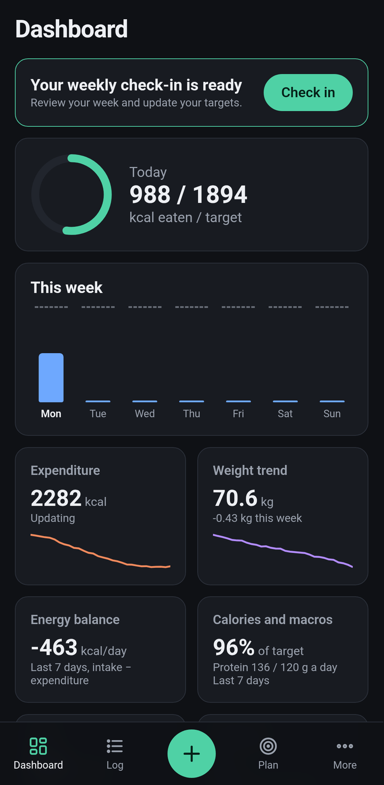
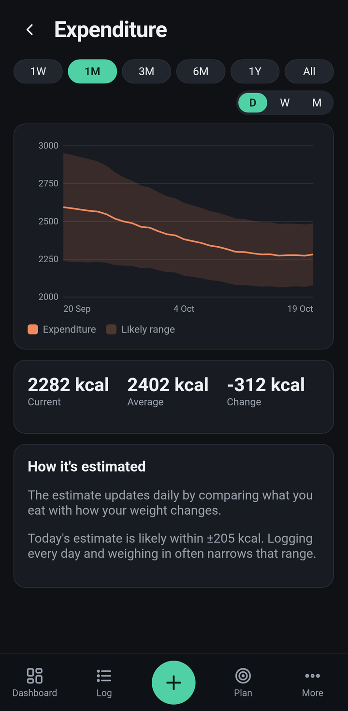
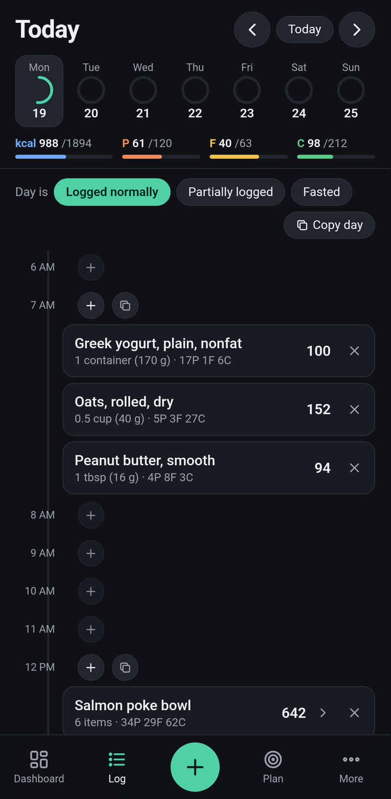
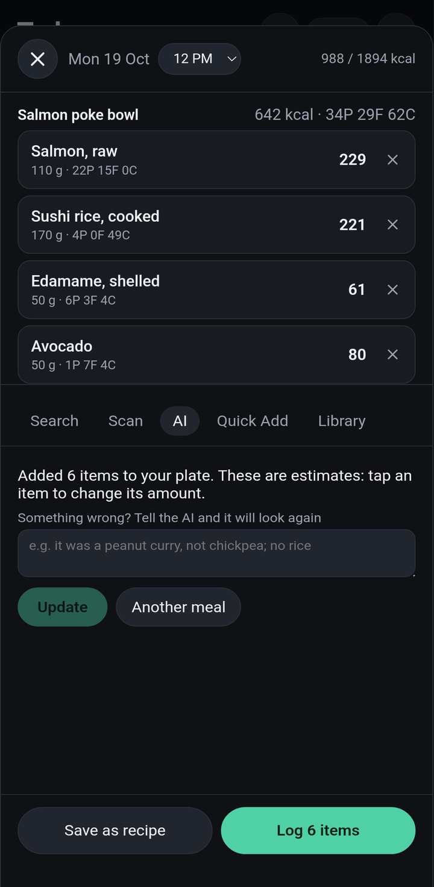
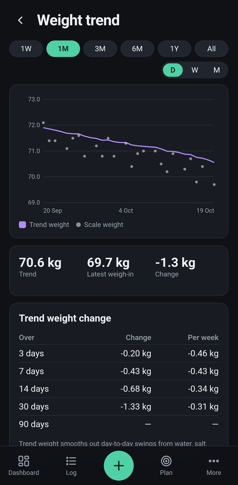
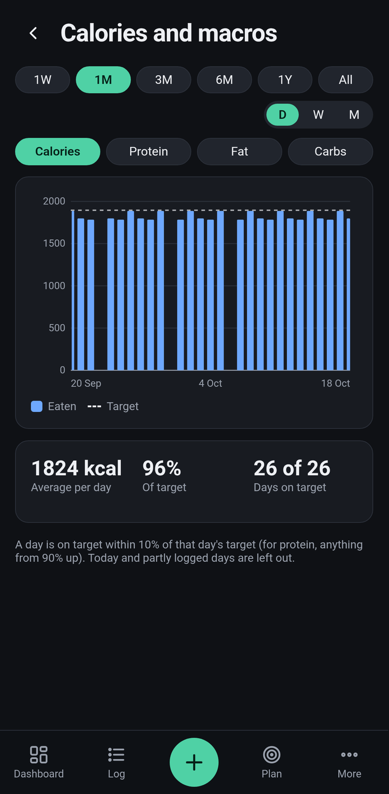

OpenMacro
The free, open-source nutrition coach
Adaptive coaching
Learns what you
actually burn
It estimates your expenditure from your food and your weight, and updates your targets every week.


Logging
Log a meal
in seconds
58,000
foods
Barcode scanning
AI from a photo


Something wrong? Just say so
“It was a peanut curry, not chickpea.”
Insights
See the trend,
not the noise
Weight trend, energy balance, macros and micronutrients.


No account.
No subscription.
No ads.
Your data stays on your phone, and every line of code is open.
MIT licensed
Built in Rust
Android
OpenMacro
github.com/SilverCrocus/OpenMacro
Free download ·
★
Star it and help build it